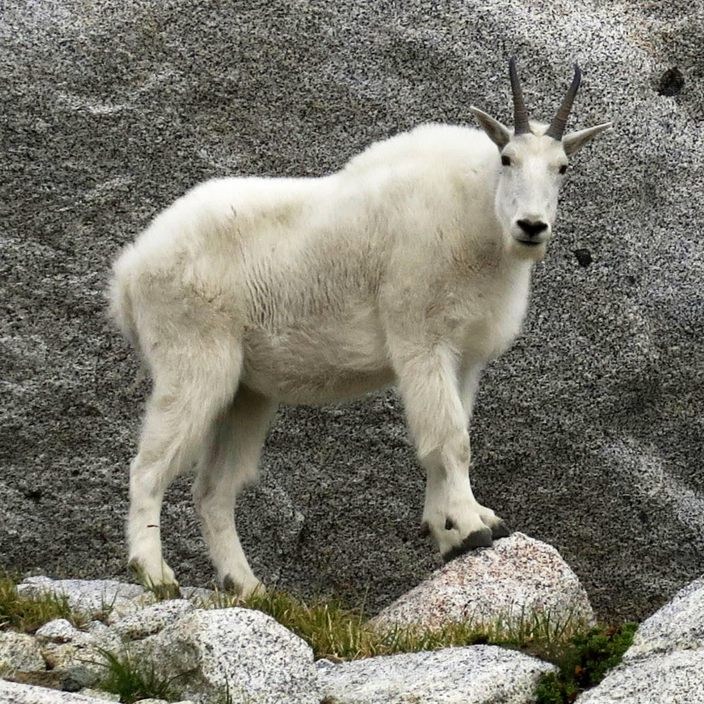

Bem-Vindos ao Site do Goat!
Por: Pietro Rycaco
Fala, galera! Sejam muito bem-vindos ao meu site!
Me chamam de Pietro Rycaco, e criei este espaço para ser o nosso ponto de encontro oficial. Sou um programador mirim que adora o mundo da tecnologia e passo o meu tempo desenvolvendo e aprendendo cada vez mais. Por aqui, vou compartilhar minha jornada no mundo do desenvolvimento, falar sobre os meus códigos e projetos em Java e HTML